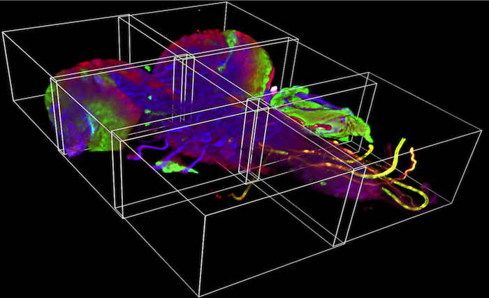
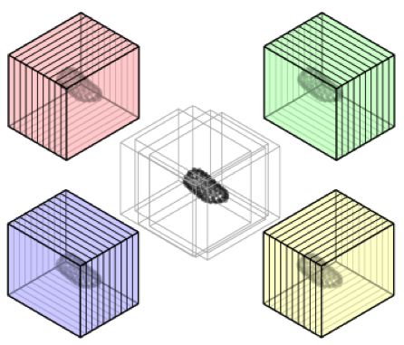
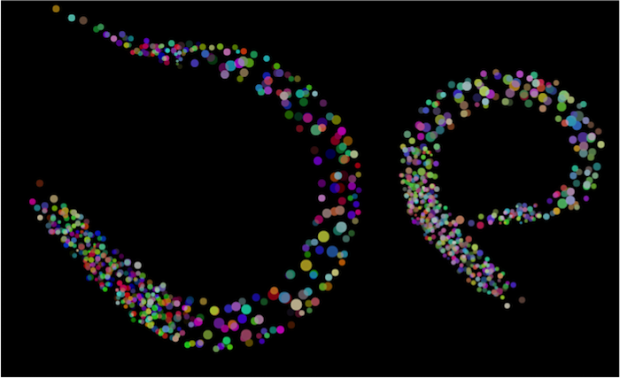

<div class="home">

  <!-- Main image carousel-->
  <div id="carousel" class="carousel slide" data-ride="carousel" style="width: 700px; margin: 0 auto">
    <!-- Indicators -->
    <ol class="carousel-indicators">
      <li data-target="#carousel" data-slide-to="0" class="active"></li>
      <li data-target="#carousel" data-slide-to="1"></li>
      <li data-target="#carousel" data-slide-to="2"></li>
    </ol>
   
    <!-- Wrapper for slides -->
    <div class="carousel-inner">
      <div class="item">
        
        <div class="carousel-caption">
            <h3>Stiching</h3>
        </div>
      </div>
      <div class="item active">
        
        <div class="carousel-caption">
            <h3>Multiview Registration</h3>
        </div>
      </div>
      <div class="item">
        
        <div class="carousel-caption">
            <h3>Alternative Splicing</h3>
        </div>
      </div>
    </div>
   
    <!-- Controls -->
    <a class="left carousel-control" href="#carousel" role="button" data-slide="prev">
      
    </a>
    <a class="right carousel-control" href="#carousel" role="button" data-slide="next">
      
    </a>
  </div> <!-- End Carousel -->

  </br></br></br>

  <h1 class="page-heading">Posts</h1>

  <ul class="post-list">
    {% for post in site.posts %}
      <li>
        <span class="post-meta">{{ post.date | date: "%b %-d, %Y" }}</span>

        <h2>
          <a class="post-link" href="{{ post.url | prepend: site.baseurl }}">{{ post.title }}</a>
        </h2>
      </li>
    {% endfor %}
  </ul>
  
  <p class="rss-subscribe">subscribe <a href="{{ "/feed.xml" | prepend: site.baseurl }}">via RSS</a></p>

</div>

<script src="https://ajax.googleapis.com/ajax/libs/jquery/1.11.0/jquery.min.js"></script>
<script src="javascripts/bootstrap.min.js"></script>

